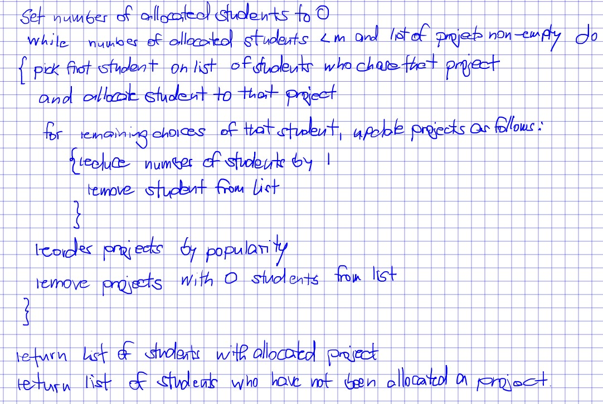
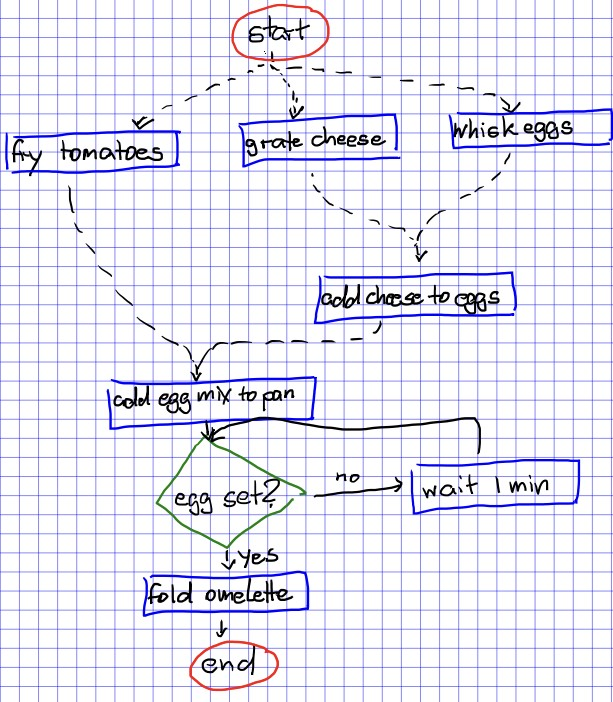
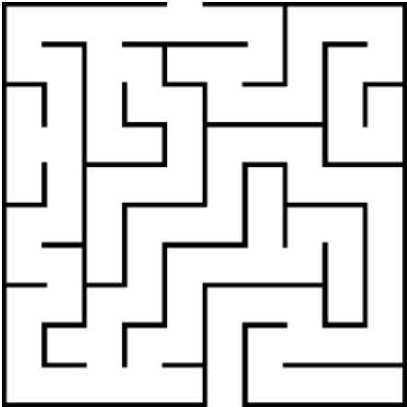

Pseudocode is used to construct algorithms in basic terms, to give humans an idea of what an algortihm's intended outcomes are. It contains two types of volcabulary: one is conventional programming functions e.g. loops & conditions, while the other is informal but standard English e.g. verbs and adjectives. Pseudocode can be interpreted by programmers and translated into a programming language. In this module, pseudocode can be presented as either standard English or as a flowchart.
Standards
In this course, pseudocode has certain requirements which must be met in order to ensure that it can be reasonably understood by humans. These are consistency, clartiy, scope and brevity. Each has it's own importance to create effective and coherent pseudocode.
Consistency
Consistency in pseudocode refers to maintaining uniformity in the structure of instructions throughout the code. Consistent pseudocode adheres to a set of conventions for formatting, naming, and only uses acceptable volcabulary. The overall effect is enhanced readability and comprehension for programmers due it being easy to follow the logic and flow of the algorithm, reducing the likelihood of errors due to misunderstandings.
Example: Project Allocation Algorithm

The following algorithm is used to allocate CS students to a coding project.
It can be called consistent due to the following features:
It has uniform variable names e.g. students, projects
It contains two iterative processes (loops), each of these serve a different purpose.
The only data strctures used are clearly defined (sets and lists)
It uses acceptable vocabulary that is understandable for a non-sepcialist reader, e.g. allocate, reduce
Indentation is used to show the logical program flow
Clarity
Pseudocode should be coherent for humans, so that they can be easily interpreted and translated into a programming language for a computer. If there are inputs or outputs in a description, it should be made clear what they are and any additional conditions or assumptions they require. Variables do not necessarily require declaration. Function calls and blocks of code, such as code contained within a loop, are often replaced by a one-line natural language sentence.
Example: Making an Omelette

The following algorithm is used as a recipe to create an omelette
It has clarity due to the following features:
Variables are not pre-declared, instead simply introduced (as ingredients) through the algorithm
Instructions are defined in squares, conditions are defined in diamonds (the reader should already be aware of this property of flowcharts)
Operations i.e. actions are clearly labelled and defined therefore are understood by the reader
The start and termination commands are connected by arrows showing the beginning and ending of the flow of the algorithm
Space between blocks is used to show the logical program flow
Scoping
When describing a pseudocode structure e.g a loop, it should be clear which
statements are included in the loop, i.e. which statements get repeated. This
could be done through explicit BEGIN/END structures, indentation or some
other mechanism.
Brevity
Abstraction of irrelevant details is a key skill in this module, and can be applied to pseudocode. By avoiding unnecessary elaboration, brevity helps in streamlining the pseudocode, making it easier to identify the core logic and understand the algorithm's flow quickly.
Example: Solving a Maze

In order for an agent to solve a maze, the following specific details/assumptions are required.
The agent must begin at the entrance of the maze, and any algorithm should terminate when the end is reached.
Any space outside the maze is irrelevant, and should be abstracted from the problem specification
The agent's method of movement should be concisely declared.
Procedures when encounterting junctions and dead ends are necessary to traversing the maze.
An algorithm to solve the maze should attempt to solve the maze as swiftly as possible.
Created by 3 Foundation Year Computer Science (FYCS) students at the University of Manchester.